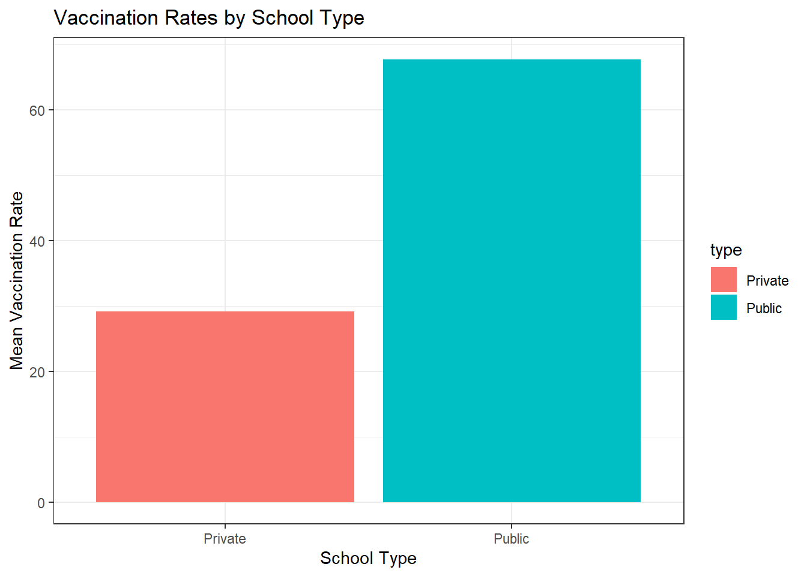
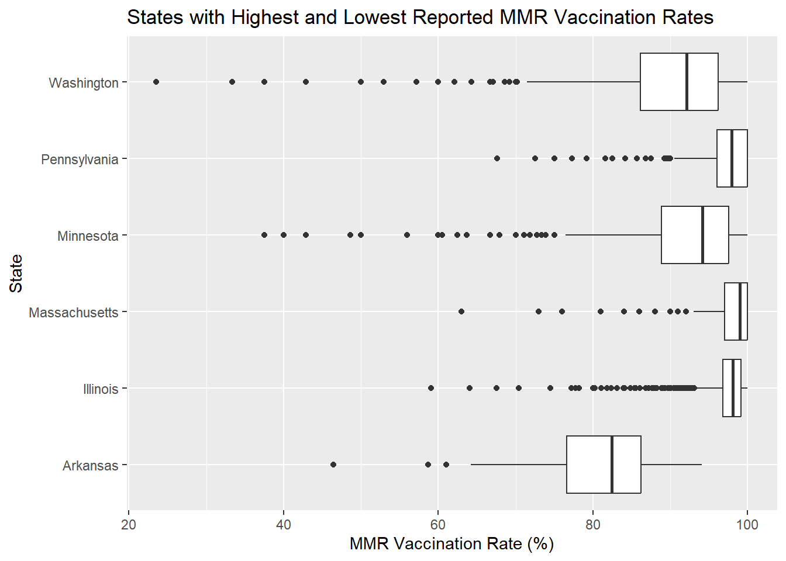

library(tidyverse)
library(tidymodels)
library(leaflet)The Measles Project
Comparing Private & Public Schools
Introduction and Data
Motivation and Context
The motivation for this project stemmed from the measles dataset from tidytuesday. It was interesting to see how the data set categorically characterized the data. Our team imported the data into R and used the categories as a guide to make our plots and questions. The data as reported in the Wall Street Journal presents a map of measles vaccination rates in schools across the United States, showing that some schools have dangerously low vaccination rates, which increases the risk of measles outbreaks. The data is based on information from the 2018-2019 school year and includes public, private, and charter schools. According to the map, many of the schools with the lowest vaccination rates are in states such as Idaho, Utah, Colorado, and Oregon. The article also notes that measles cases have been on the rise in recent years, and emphasizes the importance of vaccination in preventing the spread of the highly contagious virus. Through this narrative and viewing the raw data we were able to form our hypothesis and question.
Research question: In 2018, how does the vaccination rate for measles differ across regions in the US? How do school districts in regions with high vaccination rates vs. low vaccination rates differ (public v. private, enrollment statistics, type of geographical region - urban, rural)?
Hypothesis: It is expected that states with higher rates of urbanization will have higher vaccination rates for mmr. It is also expected that schools in these states will have higher vaccination rates, differing mainly on whether they are private or public (whereby private may have higher rates).
Note:
We saw negative values, but we don’t know what it means - perhaps these suggest that the schools did/do not report vaccination rates.
Full disclosure: In the first visualization, there are some data points in Asia, suggesting that some of the schools are located in Asia, but we are working on removing these. Also, for now the first visualization has “eval: FALSE” to facilitate pushing and pulling on GitHub (leaflet takes up a lot of space).
Ethical Issues
Vaccination data is listed under HIPAA as protected health information and therefore cannot be shared without patient consent. In certain areas, vaccine data is not required for schools as well. The data may also be used to discriminate against certain areas unjustly. The US does not all benefit equally from our research. Some areas may also be more or less receptive to revealing their vaccination information so the study may not impact our target population equally.
Limitations
Some states do not require schools to report MMR vaccination data, thus resulting in a lack of information for a few states. This results in inconclusive data from those states, and they will not be considered for this research analysis.
Citing Sources
[1] “Urban Percentage of the Population for States, Historical.” Iowa State University | Iowa Community Indicators Program, Iowa State University, www.icip.iastate.edu/tables/population/urban-pct-states.
Methodology
visualizations and summary statistics
measles <- readr::read_csv('data/measles.csv')Rows: 66113 Columns: 16
── Column specification ────────────────────────────────────────────────────────
Delimiter: ","
chr (6): state, year, name, type, city, county
dbl (8): index, enroll, mmr, overall, xmed, xper, lat, lng
lgl (2): district, xrel
ℹ Use `spec()` to retrieve the full column specification for this data.
ℹ Specify the column types or set `show_col_types = FALSE` to quiet this message.glimpse(measles)Rows: 66,113
Columns: 16
$ index <dbl> 1, 2, 3, 4, 5, 6, 7, 8, 9, 10, 10, 11, 12, 13, 14, 15, 15, 16…
$ state <chr> "Arizona", "Arizona", "Arizona", "Arizona", "Arizona", "Arizo…
$ year <chr> "2018-19", "2018-19", "2018-19", "2018-19", "2018-19", "2018-…
$ name <chr> "A J Mitchell Elementary", "Academy Del Sol", "Academy Del So…
$ type <chr> "Public", "Charter", "Charter", "Charter", "Charter", "Public…
$ city <chr> "Nogales", "Tucson", "Tucson", "Phoenix", "Phoenix", "Phoenix…
$ county <chr> "Santa Cruz", "Pima", "Pima", "Maricopa", "Maricopa", "Marico…
$ district <lgl> NA, NA, NA, NA, NA, NA, NA, NA, NA, NA, NA, NA, NA, NA, NA, N…
$ enroll <dbl> 51, 22, 85, 60, 43, 36, 24, 22, 26, 78, 78, 35, 54, 54, 34, 5…
$ mmr <dbl> 100, 100, 100, 100, 100, 100, 100, 100, 100, 100, 100, 100, 1…
$ overall <dbl> -1, -1, -1, -1, -1, -1, -1, -1, -1, -1, -1, -1, -1, -1, -1, -…
$ xrel <lgl> NA, NA, NA, NA, NA, NA, NA, NA, NA, NA, NA, NA, NA, NA, NA, N…
$ xmed <dbl> NA, NA, NA, NA, 2.33, NA, NA, NA, NA, NA, NA, 2.86, NA, 7.41,…
$ xper <dbl> NA, NA, NA, NA, 2.33, NA, 4.17, NA, NA, NA, NA, NA, NA, NA, N…
$ lat <dbl> 31.34782, 32.22192, 32.13049, 33.48545, 33.49562, 33.43532, 3…
$ lng <dbl> -110.9380, -110.8961, -111.1170, -112.1306, -112.2247, -112.1…measles <- measles |>
filter(!is.na(lat)) |>
filter(!is.na(lng)) measles_map <- measles |>
group_by(name, city, state, lat, lng) |>
summarise(mmr = mmr) `summarise()` has grouped output by 'name', 'city', 'state', 'lat', 'lng'. You
can override using the `.groups` argument.mycolor <- colorNumeric(palette = 'Blues', domain = c(-2:100),
reverse = F)measles_map |>
leaflet() |>
addProviderTiles('CartoDB') |>
addCircleMarkers(radius = ~ 0.01 * mmr,
color = ~ mycolor(mmr),
popup = ~ paste0(name, "<br/>",
mmr)) |>
addLegend(pal = mycolor,
values = c(-2:100),
opacity = 0.75,
title = "Vax Rate per School",
position = 'topleft')Figure 1. Each data point represents a school, and the color represents the mmr vaccination rate at that school (reported) - where a dark blue would represent low vaccination rates (if any) and dark red would represent almost 100% (if not 100%) vaccination rates. This visualization will be used to 1) understand variability of vaccination rates in schools across different states, and 2) help us create valid connections between states that have substantially different mmr vaccination rates.
measles_filtered <- measles[measles$type %in% c("Public", "Private"), ]
mean_vaccination_rate <- aggregate(overall ~ type, measles_filtered, mean)
ggplot(mean_vaccination_rate, aes(x = type, y = overall, fill = type)) +
geom_bar(stat = "identity") +
labs(title = "Figure 2 Vaccination Rates by School Type",
x = "School Type",
y = "Mean Vaccination Rate") +
theme_bw()
state highest vs. lowest (county x, county y) \(H_0: \bar x_{public}-\bar x_{private}=0\) difference in mean vaccination rate is 0, there is no significant difference \(H_A: \bar x_{public}-\bar x_{private}\ne0\) difference in mean vaccination rate is not 0, there is a significant difference
set.seed(17)
boot_hyp_test <- measles_filtered |>
specify(response = mmr , explanatory = type) |>
generate(reps = 1000, type = "bootstrap") |>
calculate(stat = "diff in means", order = c("Public", "Private"))
boot_hyp_test |>
summarize(lower = quantile(stat , 0.025),
upper = quantile(stat , 0.975))# A tibble: 1 × 2
lower upper
<dbl> <dbl>
1 28.2 30.5We find evidence to reject the null hypothesis and we find strong evidence toward the alternative hypothesis that the vaccination rate in public schools is significantly higher than in private schools.
measles |>
filter(mmr != -1) |>
group_by(state) |>
summarise(max = max(mmr),
min = min(mmr))# A tibble: 21 × 3
state max min
<chr> <dbl> <dbl>
1 Arizona 100 15.4
2 Arkansas 96.1 17.2
3 California 99 1
4 Colorado 100 16.2
5 Connecticut 100 67.9
6 Illinois 100 10.4
7 Maine 100 38.5
8 Massachusetts 100 3
9 Minnesota 100 20
10 Missouri 99 1
# … with 11 more rowstablemeasles <- measles |>
filter(mmr != -1) |>
group_by(state) |>
filter(mmr %in% max(mmr) | mmr %in% min(mmr)) |>
summarise(county = county,
mmr = mmr) |>
arrange(mmr)`summarise()` has grouped output by 'state'. You can override using the
`.groups` argument.tablemeasles |>
group_by(county, state) |>
summarize(county = str_to_title(county),
state = str_to_title(state),
mmr = mmr) |>
distinct()`summarise()` has grouped output by 'county', 'state'. You can override using
the `.groups` argument.# A tibble: 682 × 3
# Groups: county, state [662]
county state mmr
<chr> <chr> <dbl>
1 Adams Colorado 100
2 Adams Illinois 100
3 Addison Vermont 100
4 Alameda California 99
5 Alamosa Colorado 100
6 Albany New York 100
7 Alexander Illinois 100
8 Allegany New York 100
9 Allen Ohio 100
10 Androscoggin Maine 100
# … with 672 more rowsmeasles |>
filter(type != 'NA') |>
ggplot(
aes(x = enroll, y = mmr, color = type)
) +
geom_point(alpha = 0.3) +
facet_wrap("type", ncol = 3) +
labs(x = "Enrollment (in #s)",
y = "Vaccination Rate",
title = "Does enrollment number effect vaccination rates?",
color = "School Type") +
theme(axis.title.x = element_text(vjust = -1))Warning: Removed 7411 rows containing missing values (`geom_point()`).Figure 3. No data was reported for BOCES, and non public schools. This visualization refutes the idea that enrollment numbers influences reported MMR vaccination rates, though it may show that high enrollment numbers for public schools and for other school types (not including BOCES, and non public schools) suggests a higher MMR vaccination rate reported.
library(dplyr)
measles_state <- measles |>
filter(mmr > 0) |>
group_by(state) mean_measles_state <- measles_state |>
summarise(mean_mmr = mean(mmr))
high_low_state_mean <- measles_state |>
filter(state == c("Illinois", "Massachusetts", "Pennsylvania", "Arkansas",
"Washington", "Minnesota"))Warning in state == c("Illinois", "Massachusetts", "Pennsylvania", "Arkansas", :
longer object length is not a multiple of shorter object length
Warning in state == c("Illinois", "Massachusetts", "Pennsylvania", "Arkansas", :
longer object length is not a multiple of shorter object length
Warning in state == c("Illinois", "Massachusetts", "Pennsylvania", "Arkansas", :
longer object length is not a multiple of shorter object length
Warning in state == c("Illinois", "Massachusetts", "Pennsylvania", "Arkansas", :
longer object length is not a multiple of shorter object length
Warning in state == c("Illinois", "Massachusetts", "Pennsylvania", "Arkansas", :
longer object length is not a multiple of shorter object length
Warning in state == c("Illinois", "Massachusetts", "Pennsylvania", "Arkansas", :
longer object length is not a multiple of shorter object length
Warning in state == c("Illinois", "Massachusetts", "Pennsylvania", "Arkansas", :
longer object length is not a multiple of shorter object length
Warning in state == c("Illinois", "Massachusetts", "Pennsylvania", "Arkansas", :
longer object length is not a multiple of shorter object length
Warning in state == c("Illinois", "Massachusetts", "Pennsylvania", "Arkansas", :
longer object length is not a multiple of shorter object length
Warning in state == c("Illinois", "Massachusetts", "Pennsylvania", "Arkansas", :
longer object length is not a multiple of shorter object length
Warning in state == c("Illinois", "Massachusetts", "Pennsylvania", "Arkansas", :
longer object length is not a multiple of shorter object length
Warning in state == c("Illinois", "Massachusetts", "Pennsylvania", "Arkansas", :
longer object length is not a multiple of shorter object length
Warning in state == c("Illinois", "Massachusetts", "Pennsylvania", "Arkansas", :
longer object length is not a multiple of shorter object length
Warning in state == c("Illinois", "Massachusetts", "Pennsylvania", "Arkansas", :
longer object length is not a multiple of shorter object length
Warning in state == c("Illinois", "Massachusetts", "Pennsylvania", "Arkansas", :
longer object length is not a multiple of shorter object length
Warning in state == c("Illinois", "Massachusetts", "Pennsylvania", "Arkansas", :
longer object length is not a multiple of shorter object length
Warning in state == c("Illinois", "Massachusetts", "Pennsylvania", "Arkansas", :
longer object length is not a multiple of shorter object lengthhigh_low_state_mean |>
ggplot(
aes(x = mmr, y = state)) +
geom_boxplot() +
labs(title = "States with Highest and Lowest Reported MMR Vaccination Rates",
x = "MMR Vaccination Rate (%)",
y = "State")
Figure 4. This plot represents the six states with the highest and lowest MMR vaccination rates from the total states sampled. The states with the lowest reported MMR vaccination rates is Arkansas, Washington, and Minnesota. The states with the highest reported MMR vaccination rates is Massachusetts, Illinois, and Pennsylvania.
Models & Prediction
int_model <- linear_reg() |>
set_engine("lm") |>
fit(mmr ~ type * enroll * state, data = measles)
tidy(int_model)# A tibble: 40 × 5
term estimate std.error statistic p.value
<chr> <dbl> <dbl> <dbl> <dbl>
1 (Intercept) 83.6 2.64 31.7 3.16e-215
2 typeKindergarten 4.05 7.03 0.576 5.65e- 1
3 typePrivate 4.42 4.84 0.913 3.61e- 1
4 typePublic 8.87 3.25 2.73 6.37e- 3
5 enroll 0.0597 0.0313 1.91 5.67e- 2
6 stateCalifornia -14.1 1.93 -7.27 3.74e- 13
7 stateColorado 7.06 6.47 1.09 2.75e- 1
8 stateOhio -3.96 2.06 -1.92 5.51e- 2
9 stateUtah 1.28 2.71 0.471 6.38e- 1
10 typeKindergarten:enroll -0.0426 0.0942 -0.452 6.51e- 1
# … with 30 more rowsglance(int_model)$adj.r.squared[1] 0.4717082The interactive model has an adjusted r-squared of 0.2799859. [ENTER WHICH ONE IS BETTER] vastly improve the adjusted r squared suggesting that this model has a better overall fit.
Fitted model equation: \(\hat{MMR} = 83.57550807\) THIS NEEDS FIXING
Here we make a prediction based on that better model: so say a private school had this enrollment rate, X will happen AND WE VISUALIZE
int_model_additive <- linear_reg() |>
set_engine("lm") |>
fit(mmr ~ type + enroll + state, data = measles)
tidy(int_model_additive)# A tibble: 9 × 5
term estimate std.error statistic p.value
<chr> <dbl> <dbl> <dbl> <dbl>
1 (Intercept) 81.2 1.57 51.9 0
2 typeKindergarten -13.1 5.34 -2.45 1.42e- 2
3 typePrivate -18.8 1.77 -10.6 2.37e- 26
4 typePublic 7.86 1.72 4.57 4.93e- 6
5 enroll 0.0923 0.00274 33.7 1.62e-242
6 stateCalifornia -5.87 0.764 -7.68 1.69e- 14
7 stateColorado 21.0 5.07 4.14 3.43e- 5
8 stateOhio 4.45 0.858 5.18 2.21e- 7
9 stateUtah -37.6 1.65 -22.8 6.82e-114glance(int_model_additive)$adj.r.squared[1] 0.2430603The additive model has an adjusted r-squared of 0.205.
new_data <- data.frame(type = "Public", enroll = 100)
predicted_mmr <- predict(int_model, new_data = new_data)
predicted_mmrHypothesis Testing
For this hypothesis test, let:
\(\pi_{priv}\) = the true proportion of students enrolled in private elementary school with the MMR vaccination in the United States (for states with data collected)
\(\pi_{pub}\) = the true proportion of students enrolled in public elementary school with the MMR vaccination in the United States (for states with data collected)
Null Hypothesis
\(H_o\): \(\pi_{priv}\) = \(\pi_{pub}\) ; the true proportion of students enrolled in private elementary school with the MMR vaccination is not significantly different from the true proportion of students enrolled in public elementary school with the MMR vaccination in the United States (for states with data collected)
Alternative Hypothesis
\(H_a\): \(\pi_{priv}\) ≠ \(\pi_{pub}\) ; the true proportion of students enrolled in private elementary school with the MMR vaccination is significantly different from the true proportion of students enrolled in public elementary school with the MMR vaccination in the United States (for states with data collected)
Results
Figure 1 - This visualization answers the 1st research question by showing which states have a high percentage of mmr vaccination rates across different schools (such as Ohio), and states that have a low percentage (such as Florida). Though Ohio and Florida don’t show much variability across different schools, California does show a lot of variability. Overall, this shows a general map of how mmr vaccination rates differ across different regions in the US.
Figure 2 - The graph showing the average vaccination rates between private and public schools seems to show a higher average vaccination rate for public schools. This is possibly due to local government rules and control over public schools in which students may be mandated to get vaccinated. Whereas in private schools it may have been more up to choice and out of government control.
Figure 3 - The data reported for Charter, Kindergarten and Private schools shows that for schools with no new enrollments the vaccination rates reported differ significantly. For public schools we see a little more diversity, but no strong correlation either. Public schools with 0 new enrollments may have high or even no vaccination rates reported, but generally we see that a high enrollment rate rarely leads to low vaccination rates (this also applies to Charter, Kindergarten, and private schools). This visualization answers the question on whether or not enrollment numbers has an effect on vaccination rates, for which it was determined, enrollment rate is not a determining factor.
Figure 4 - To explore if there is a relationship between urban and rural status and MMR vaccination rate, first, the states with the highest (Massachusetts, Illinois, and Pennsylvania) and lowest (Arkansas, Washington, and Minnesota) mean MMR vaccination rates were plotted. On its own this does not display any relation of urban or rural status to percentage of MMR vaccination rates, so information, provided by Iowa State University, on the 2010 U.S. Decennial Cenus was referenced [1]. The percentage of the total population in urban areas per each state was found: Massachusetts (92%), Illinois (88.5%), Pennsylvania (78.7%), Arkansas (56.2%), Washington (84.1%), and Minnesota (73.3%). There appears to be a weak correlation between urban/rural status of each state and MMR vaccination rate, but to a slight degree there is a trend. For instance, the state with the most drastic difference in mean MMR vaccination rate is Arkansas (80.49%) when compared to states with the highest mean MMR vaccination rates (>95%). Relatedly, Arkansas also has a significantly lower percentage of the total population in urban areas. States like Massachusetts and Illinois hold comparably higher percentages of the total population in urban areas and hold the highest mean MMR vaccination rates, 97.04% & 97.39%, respectively. However, states like Washington weaken the correlation by having a high percentage of the total population in urban areas, but reporting a comparably low mean MMR vaccination rate (89.3%).
Full disclosure: The first visualization has “eval: FALSE” to facilitate pushing and pulling on GitHub (leaflet takes up a lot of space).